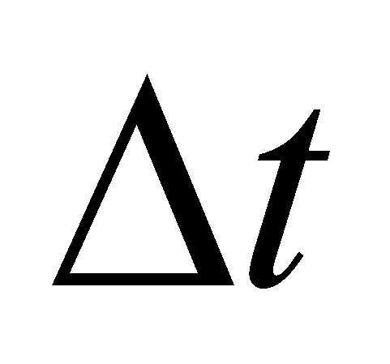

|
|
|
According to chapter 4, a vector is a literal or graphical representation of a specific elementary process (SEP), which means an elementary variation of a single attribute, distributed on an elementary variation of a support attribute, that is an element of a derived distribution of a primary distribution. The variation takes place between two S0-type states (two elements of primary distribution)107, initial state and final state, states which represent the asymptotic boundaries of the vector object, but at the same time, they are also its internal references.
The density and direction of the derived distribution element, which are invariant in the elementary support interval, are states Sx (where x is the rank of the derived distribution) of SEP. As we have seen in chapter 3, an object is characterized by a set made-up from six basic properties which form the general object model:
P1 Set of the distributed properties;
P2 Type of the support attribute;
P3 Distribution type;
P4 Amount of the support domain;
P5 Internal reference system;
P6 Simultaneous existence of all these properties, at the same time t.
As for the vectors, they belong to SEP-type, the set of the distributed properties consists of only a single property (variable attribute). The support attribute type is mostly the temporal attribute, but it can be other type as well, such as the spatial one (for example, in case of the gradient), frequential (applicable in case of the phonetic or musical processes) etc. As regards the vectors, the distribution type is always the same, that is the linear distribution. The amount of the support domain is always the same, the domain on which the distribution linearity is maintained. The internal reference system (RS) is made-up from the two above-mentioned states Sx, which are the marks between which the SEP takes place (asymptotic boundaries of the internal domain), and these states are defined against an external reference system (the reference system against which the internal reference of the primary distribution is being determined).
As for the actual case of the velocity vectors, the set of the basic properties is:
P1 Variation of the spatial position;
P2 Temporal attribute;
P3 Linear distribution;
P4 Interval on which the density (velocity) is kept even;
P5 Initial or final state (position) between which the position variation takes place;
P6 The moment tf of the final state, the right-side internal reference of the temporal interval , which represents the SEP support (the left-side internal reference ti can be also used for the abstract SEP).
All the abstract objects which have the same model make-up a class of objects. When we are dealing with a set of objects from the same class, all these objects shall have a set of common properties, that is even the set which makes-up the class model. Due to distinction reasons, the concrete objects of the same class (instances) must also contain specific attributes, besides the common attributes, between which there are non-zero differences (contrast).
In case of the vectors (but also of other objects), the quantitative contrast is determined by means of a difference between the values of a specific attribute; but, we saw that the relations deployed between two or more objects are relations developed between their internal reference systems, systems evaluated against an external reference system, common for all the set vectors.
The internal reference system of a vector k (where k is the running number of the vector from the arranged set of n vectors which make-up the vector field) is made-up from the properties P5, out of which the reference may be either the final state S0k(tf), or the initial state S0k(ti). In case of the velocity fields, defined against an external RS, the two states (elements of a primary spatial distribution) are the positions:
(X.17.1)
and:
(X.17.2)
The state S1k(tf), the velocity, is the density of the first rank derived distribution element of the primary spatial distribution:
(X.17.3)
The velocity field is therefore made-up from n vectors, which are simultaneously found in the interval (interval with a right-side internal reference at the moment tf), with disjoint spatial positions, given by the sets (set of the application points) and (the set of the peak values of the velocity vectors). If we are taking into account that the spatial velocity is a property of some MS, the spatial-temporal exclusion principle of MS postulates that both the set and are strict sets, because the spatial positions of more MS at the same moment t cannot be identical. Otherwise speaking, the spatial positions of the vectors from the velocity field are external specific attributes for these objects. The set of the positions is a complex abstract object, for which a natural internal reference can be defined, that is a reference which shall be a common component (since it is a reference) for all the objects from the set.
The natural internal reference of a set made-up from n values is the arithmetic mean of the set values, given by the following relation:
(X.17.4)
so that each property from the set is made-up from two components:
(X.17.5)
where is the common component of all the objects at the moment ti (the internal natural reference), and is the natural specific property of the object k (deviation, dispersion) at the same moment (against the internal natural reference).
The natural specific properties have the basic property of having a null internal natural reference (specific properties do not have a common component). Therefore, we shall have:
(X.17.6)
The abstract object , given by the relation X.17.4 represents the global (general) position of the objects set (of the vector field) at the moment ti, against the external position reference.
Similarly, at the moment tf, we shall have:
(X.17.7)
If
 ,
this means that there is an overall motion of the objects set with
the following common (global) velocity:
,
this means that there is an overall motion of the objects set with
the following common (global) velocity:
(X.17.8)
which is also a natural reference of the velocity field, against which a set of natural specific velocity rates shall result. All of these are coming through the derivation of the relation X.17.5 in relation with the time, resulting that:
(X.17.9)
The global motion can be also time
variable, consequently, a global acceleration
could be deployed, a global variation of the acceleration, so on. The
most relevant fact is that all the global amounts, because they are
considered as natural references, are also common properties to all
the vectors from the vectorial field.
107 This assertion is applicable for the first rank derived distributions. In general, a Pn-type SEP has two -type as its boundaries.
Copyright © 2006-2011 Aurel Rusu. All rights reserved.